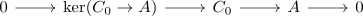
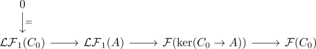
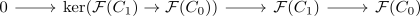
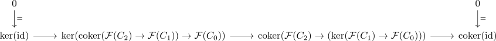
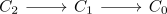

co-acyclic resolution lemma
Proposition
Let $\mathcal{A}, \mathcal{B}$ be abelian categories, where $\mathcal{A}$ admits enough projectives and $\mathcal{F}: \mathcal{A} \rightarrow \mathcal{B}$ a right exact functor Suppose $A \in \mathcal{A}$ is an object, $C_* \rightarrow A$ a resolution consisting of coacyclic objects
Then the left derived functor may be computed using $C_* \rightarrow A$
Proof
By induction via dimension shifting of a left derived functor:
$i = 0$
follows from the right exactness, where
$i = 1$
Let

be the exactification
Then using the long exact sequence of a derived functor

or

where the dashed arrows are induced by the universal property of the kernel / cokernel:
- $\mathcal{F}$ preserves zero morphisms, hence $\mathcal{F}(C_2) \rightarrow \mathcal{F}(C_0)$ is the zero morphism
- similarly we get a unique morphism $\mathcal{F}(\mathrm{coker}(C_2 \rightarrow C_1)) \rightarrow \mathcal{F}(C_0)$
As using the snake lemma we get the exact sequence

Then by exactness of

we get that
(cf. image as cokernel in an exact sequence)
Therefore we have natural isomorphism
where the first is given by exactness above and the second by right exactness of $\mathcal{F}$
Thus combining the natural isomorphisms we get